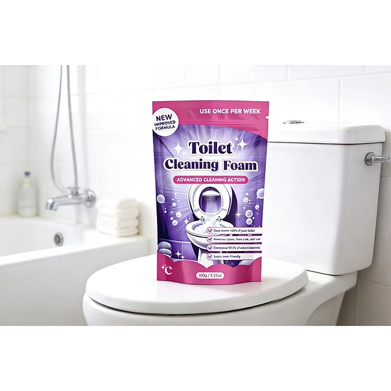
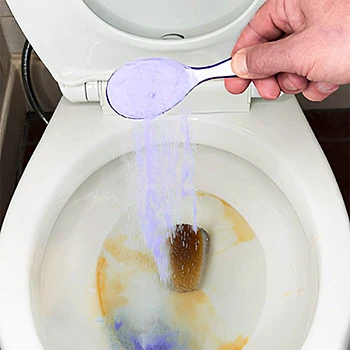

Was ist Whirlclean FaulSauber und wie funktioniert es?
Whirlclean FaulSauber ist ein Reinigungspulver für die Toilette, das im Wasser einen dichten Schaum bildet. Laut der offiziellen Website soll es Kalk, Rost und Flecken in der Toilettenschüssel und unter dem Rand lösen, ohne dass Sie schrubben müssen: einfüllen, einwirken lassen, spülen. Der Hersteller verspricht „20 Minuten zu einem 5-Sterne-Glanz“. Auf der Verpackung steht die englische Bezeichnung „Toilet Cleaning Foam“.
Das Prinzip beschreibt die Website so: Sie geben einen Esslöffel Pulver in die Toilettenschüssel. Die sauerstoffbasierte Formel schäumt sofort auf, der Schaum steigt bis unter den Rand und erreicht auch schwer zugängliche Stellen. Nach etwa 20 Minuten sollen Ablagerungen gelöst sein, sodass ein normaler Spülgang reicht. Dazu soll ein frischer Duft nach Meeresbrise entstehen, der Gerüche neutralisiert, statt sie nur zu überdecken.
Als weitere Eigenschaften nennt der Hersteller eine nicht korrosive, bleichmittel- und chlorfreie Formel, die schonend zu Rohren und Abwassersystemen sein soll. Laut einer Kundenbewertung ist das Pulver auch für Klärgruben geeignet. Eine Packung soll als konzentrierte Formel für bis zu 30 Tiefenreinigungen reichen, und die Verpackung empfiehlt eine Anwendung pro Woche.
Der Hersteller spricht von über 7.900 zufriedenen Kundinnen und Kunden und einer hervorragenden Bewertung. Die Produktseite ist auf Deutsch, die Verpackung auf den Bildern dagegen auf Englisch beschriftet.
Zur Einordnung: Sauerstoffbasierte Schaumreiniger für die Toilette gibt es von vielen Marken. Sie arbeiten meist mit Aktivsauerstoff und Säuren, die Kalk und Urinstein anlösen. Bei leichten bis mittleren Ablagerungen wirken sie oft gut, bei jahrelang festgesetztem Urinstein braucht es meist mehrere Anwendungen oder zusätzlich eine Bürste. Eine genaue Liste der Inhaltsstoffe nennt die Website nicht. Wie stark das Pulver im Vergleich zu bekannten Markenreinigern wirkt, lässt sich daher nur ausprobieren.
Whirlclean FaulSauber Funktionen
Laut der offiziellen Website bietet Whirlclean FaulSauber:
Sofortiger Schaum: hochdichter Schaum, der Kalk und Ablagerungen löst.
Ohne Schrubben: eingießen, 20 Minuten warten, spülen.
Schonend: nicht korrosiv, ohne Bleichmittel und Chlor, schonend für Rohre.
Frischer Duft: neutralisiert Gerüche, Duft nach Meeresbrise.
Konzentrat: bis zu 30 Tiefenreinigungen pro Packung.
Dosierung: 1 Esslöffel pro Anwendung.
Auf den Produktbildern ist ein violett-weißer Standbodenbeutel mit der Aufschrift „Toilet Cleaning Foam“ und dem Hinweis „Use once per week“ zu sehen. Weitere Bilder zeigen, wie violettes Pulver mit einem Löffel in die Schüssel gegeben wird, wie der lila Schaum aufsteigt, und einen Vorher-nachher-Vergleich einer stark verkalkten Toilette.
Was auf der Website fehlt, sind ein Datenblatt mit Inhaltsstoffen, Gefahrenhinweisen und Füllmenge sowie Angaben zum Hersteller des Pulvers. Gerade bei Reinigungsmitteln sind die Sicherheitshinweise auf der Verpackung wichtig, etwa ob das Produkt reizend ist und nicht mit anderen Reinigern gemischt werden darf. Lesen Sie diese Hinweise nach der Lieferung genau, bevor Sie das Pulver verwenden. Auch ob das Pulver für Toiletten mit empfindlichen Oberflächen oder Spülkästen geeignet ist, beantwortet die Website nicht.
Whirlclean FaulSauber Anwendung
Laut Website ist die Anwendung dreistufig. Gießen: Nehmen Sie einen Esslöffel Pulver und geben Sie ihn in die Toilettenschüssel. Warten: Lassen Sie den Schaum etwa 20 Minuten einwirken, damit er Flecken, Schmutz und Ablagerungen löst. Spülen: Danach einfach spülen.
Bei hartnäckigen Ablagerungen schreibt eine Kundin, sie habe das Pulver etwa 25 Minuten einwirken lassen. Bei stark verkalkten Toiletten kann es sinnvoll sein, die Anwendung zu wiederholen oder nach dem Einwirken kurz mit der Toilettenbürste nachzuhelfen. Für die regelmäßige Pflege empfiehlt die Verpackung eine Anwendung pro Woche.
Am besten wenden Sie das Pulver an, wenn die Toilette eine Weile nicht benutzt wird, etwa vor dem Verlassen der Wohnung oder abends. So kann der Schaum ungestört wirken, und niemand kommt versehentlich mit dem Reiniger in Berührung.
Allgemeine Hinweise: Mischen Sie das Pulver nicht mit anderen Reinigern, insbesondere nicht mit chlorhaltigen Produkten, da dabei gefährliche Gase entstehen können. Tragen Sie bei empfindlicher Haut Handschuhe, lüften Sie das Bad und bewahren Sie die Packung verschlossen und außerhalb der Reichweite von Kindern und Haustieren auf. Halten Sie sich an die Sicherheitshinweise auf der Verpackung, die verbindlicher sind als jede Werbeaussage.
Whirlclean FaulSauber – Rückerstattung
Laut der offiziellen Website gilt eine 30-Tage-Geld-zurück-Garantie. Wenn Sie nicht zufrieden sind, können Sie das Produkt innerhalb von 30 Tagen zurücksenden und erhalten laut Website Ihr Geld zurück, „ohne Fragen, ohne Risiko“.
Die genauen Bedingungen stehen in den Geschäftsbedingungen, die im Fußbereich der Seite verlinkt sind, zusammen mit der Datenschutzrichtlinie und der Kontaktseite. Der Kundenservice ist per E-Mail erreichbar. Bei Reinigungsmitteln ist es üblich, dass nur ungeöffnete Packungen zurückgenommen werden; klären Sie vor einer Rücksendung mit dem Kundenservice, ob das auch hier gilt und an welche Adresse die Ware geschickt werden soll.
Zu Versanddauer und Sendungsverfolgung macht die Bestellseite keine ausführlichen Angaben. Notieren Sie sich daher die Bestellnummer und die Bestätigungs-E-Mail und fragen Sie bei längerer Wartezeit beim Kundenservice nach.
Für Verbraucher in der EU gilt zusätzlich das gesetzliche Widerrufsrecht von 14 Tagen, unabhängig von der freiwilligen Garantie; bei versiegelten Produkten, die aus Hygienegründen nicht zurückgegeben werden können, kann es nach dem Öffnen erlöschen. Testen Sie das Pulver nach der Lieferung bald, bewahren Sie Beutel und Bestellbestätigung auf und notieren Sie bei einer Rücksendung die Sendungsnummer, denn sie dient als Nachweis. Fragen Sie im Zweifel vor dem Öffnen der Packung beim Kundenservice nach, wie mit angebrochenen Beuteln umgegangen wird, damit es später keine Missverständnisse gibt.
Whirlclean FaulSauber Kundenbewertungen
-
Leonie S.Verifizierter Kauf
„Mit drei Kindern habe ich keine Zeit, täglich die Toilette zu schrubben. Ich habe FaulSauber reingegossen, bin Wäsche falten gegangen, und 20 Minuten später war die Schüssel strahlend sauber. Selbst der Ring unter dem Rand war verschwunden.“
-
Marie S.Verifizierter Kauf
„Der Schaum steigt hoch auf und haftet richtig an den Flecken. Er hat die hartnäckigen Kalkablagerungen in meinem Gästebad entfernt, die schon monatelang da waren. Und es riecht nicht nach Chlor!“
-
Laura W.Verifizierter Kauf
„Ich bin gerade in eine Wohnung mit einer ziemlich verschmutzten Toilette gezogen. Ich habe es etwa 25 Minuten einwirken lassen und den alten Schmutz weggespült.“
Whirlclean FaulSauber – Wo kaufen?
Whirlclean FaulSauber wird über die offizielle Bestellseite auf whirlclean.com verkauft. Dort finden Sie den Überblick, die Eigenschaften, die Anwendung in drei Schritten, die Kundenbewertungen und das aktuelle Angebot. Whirlclean vertreibt unter demselben Namen auch andere Haushaltsprodukte, etwa einen Fensterputzroboter.
Schaumreiniger für die Toilette in sehr ähnlicher Verpackung werden von vielen Anbietern verkauft, oft unter der allgemeinen Bezeichnung „Toilet Cleaning Foam“. Bei Angeboten auf Marktplätzen ist nicht sicher, ob es sich um dieselbe Formel handelt, und die 30-Tage-Garantie des Verkäufers gilt dort in der Regel nicht. Im Drogeriemarkt gibt es zudem vergleichbare Aktivsauerstoff-Reiniger bekannter Marken.
Die Bestellseite arbeitet mit Hinweisen auf begrenzte Stückzahlen und ein jederzeit endendes Angebot. Lassen Sie sich davon nicht drängen. Prüfen Sie vor dem Abschluss die Bestellübersicht, die Anzahl der Packungen, das Land und die Versandkosten, und achten Sie darauf, dass Sie sich wirklich auf whirlclean.com befinden, denn nur dort gelten die Bedingungen des Verkäufers. Wer zunächst testen möchte, ob das Pulver bei den eigenen Ablagerungen wirkt, bestellt am besten erst eine einzelne Packung.
Um sicherzugehen, dass Sie das Originalprodukt erhalten, besuchen die meisten Nutzer die offizielle Website.
Ist Whirlclean FaulSauber Betrug?
Nach den verfügbaren Informationen gibt es keinen Hinweis darauf, dass Whirlclean FaulSauber Betrug ist. Das Pulver wird über die Website der Marke Whirlclean mit Produktbeschreibung, Anwendungsschritten, Kundenbewertungen, Geschäftsbedingungen, Datenschutzrichtlinie und Kontaktmöglichkeit verkauft. Unter derselben Marke werden weitere Haushaltsprodukte angeboten.
Positiv sind die einfache Anwendung, die klare Dosierangabe von einem Esslöffel, die 30-tägige Geld-zurück-Garantie und die Angabe, dass die Formel ohne Chlor und Bleichmittel auskommt.
Es gibt aber Punkte, die Aufmerksamkeit verdienen. Die Website nennt weder Inhaltsstoffe noch Füllmenge noch Gefahrenhinweise, und Aussagen wie „100 % sicher“ und „desinfiziert effektiv“ werden nicht belegt. Die Verpackung ist englisch beschriftet, obwohl die Seite sich an deutsche Kundinnen und Kunden richtet. Zu Versand und Lieferzeit gibt es kaum Angaben, und die Bestellseite arbeitet mit Verkaufsdruck durch begrenzte Stückzahlen.
Vorsicht ist bei sehr ähnlichen Pulvern auf anderen Plattformen geboten, denn dort ist oft unklar, wer der Verkäufer ist und welche Garantie gilt.
Wer realistische Erwartungen bei sehr alten Ablagerungen hat, die Sicherheitshinweise auf der Packung beachtet und direkt auf der offiziellen Website bestellt, geht nach heutigem Stand kein besonderes Risiko ein, zumal die Garantie greift. Bei Fragen zu Inhaltsstoffen lohnt sich vor dem Kauf eine kurze Anfrage beim Kundenservice, etwa wenn Allergien bestehen.
Wer Produktdetails überprüfen oder die aktuelle Verfügbarkeit prüfen möchte, ist auf der offiziellen Whirlclean FaulSauber-Website am sichersten aufgehoben.
